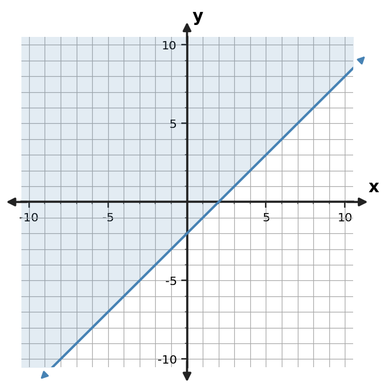
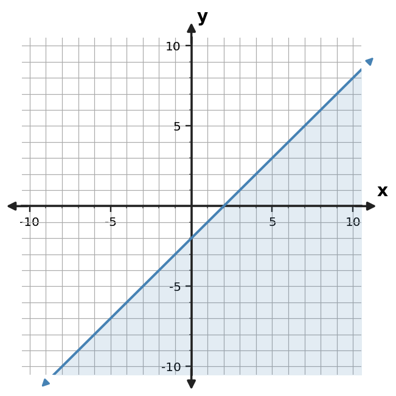
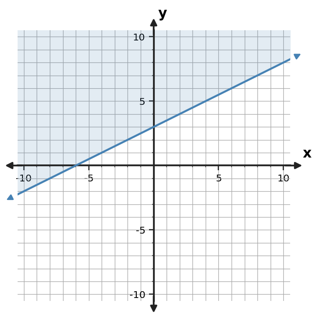
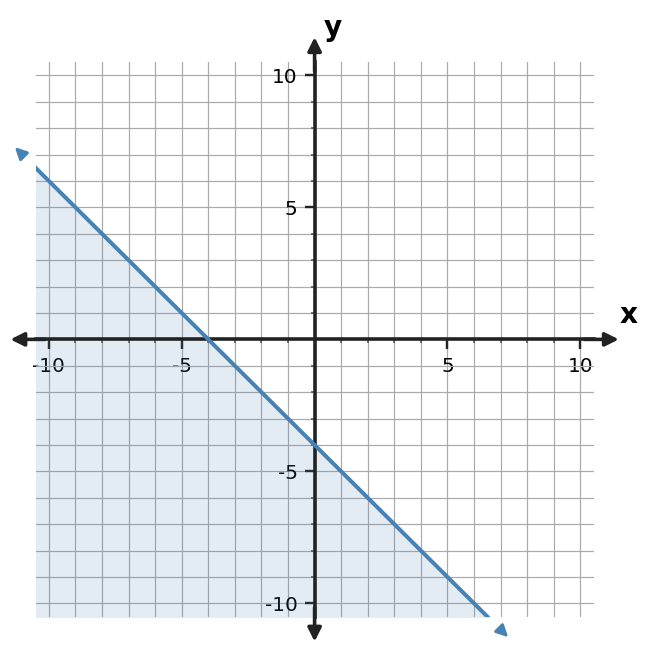

Algebra Practice 3.4 :::: Set 2
1. Construct the graph of $y \le -3x-4$ with the correct boundary style and shaded half-plane.
2. Write an inequality represented by the shaded graph. Include the correct inequality symbol.

3. A student graphs $y \lt 2x+4$ with a solid boundary and shades below. Critique the graph and state the needed correction.
4. Write an inequality represented by the shaded graph. Include the correct inequality symbol.

5. Write an inequality represented by the shaded graph. Include the correct inequality symbol.

6. Use the test-point table to decide whether $(3,-14)$ belongs in the solution region for $y \ge -3x-3$.
| Test point | Left side y | Boundary value | Satisfies? |
|---|---|---|---|
| (3,-14) | -14 | -12 | No |
7. Construct the graph of $y \le -3x+2$ with the correct boundary style and shaded half-plane.
8. Write an inequality represented by the shaded graph. Include the correct inequality symbol.

9. A student graphs $y \lt 2x$ with a solid boundary and shades below. Critique the graph and state the needed correction.
10. Write an inequality represented by the shaded graph. Include the correct inequality symbol.

11. For $y \ge -x-1$, state whether the boundary is solid or dashed and which side of the line is shaded.
12. Use the test-point table to decide whether $(2,-4)$ belongs in the solution region for $y \ge -x$.
| Test point | Left side y | Boundary value | Satisfies? |
|---|---|---|---|
| (2,-4) | -4 | -2 | No |
13. Construct the graph of $y \le 3x+1$ with the appropriate boundary style and shaded half-plane.
14. Write an inequality represented by the shaded graph. Include the correct inequality symbol.

15. A student graphs $y \lt 2x+1$ with a solid boundary and shades below. Critique the graph and state the needed correction.
16. Write an inequality represented by the shaded graph. Include the correct inequality symbol.

17. For $y \gt -3x+2$, state whether the boundary is solid or dashed and which side is shaded.
18. Use the test-point table to decide whether $(-1,1)$ belongs in the solution region for $y \gt x-1$.
| Test point | Left side y | Boundary value | Satisfies? |
|---|---|---|---|
| (-1,1) | 1 | -2 | Yes |
19. Construct the graph of $y \lt -x-2$ with the correct boundary style and shaded half-plane.
20. Write an inequality represented by the shaded graph. Include the correct inequality symbol.

21. A student graphs $y \lt -x-2$ with a solid boundary and shades below. Critique the graph and state the needed correction.
22. Write an inequality represented by the shaded graph. Include the correct inequality symbol.

23. For $y \gt -x-2$, state whether the boundary is solid or dashed and which side is shaded.
24. Use the test-point table to decide whether $(2,0)$ belongs in the solution region for $y \ge 2x-3$.
| Test point | Left side y | Boundary value | Satisfies? |
|---|---|---|---|
| (2,0) | 0 | 1 | No |